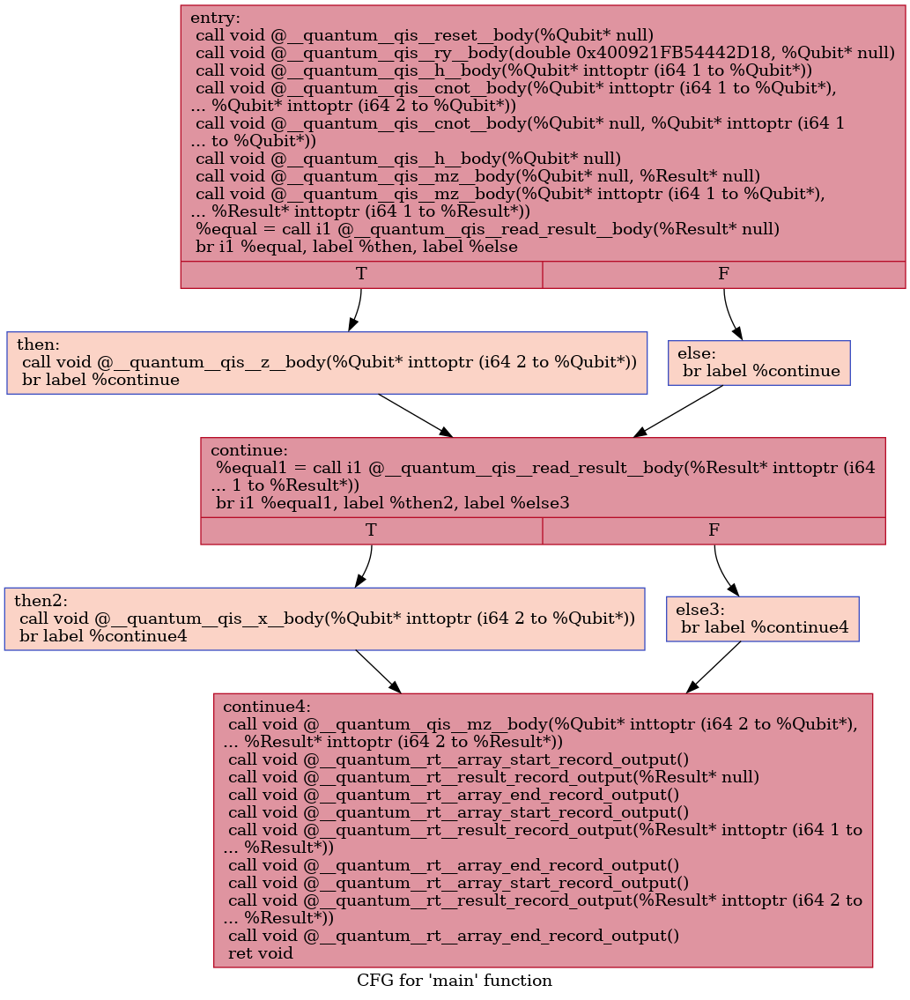

Qiskit ➡️ QIR
Contents
Qiskit ➡️ QIR#
from qiskit import QuantumRegister, ClassicalRegister, QuantumCircuit
from qiskit import BasicAer, Aer
from qiskit_qir import to_qir
---------------------------------------------------------------------------
ImportError Traceback (most recent call last)
Cell In[1], line 3
1 from qiskit import QuantumRegister, ClassicalRegister, QuantumCircuit
2 from qiskit import BasicAer, Aer
----> 3 from qiskit_qir import to_qir
ImportError: cannot import name 'to_qir' from 'qiskit_qir' (/usr/share/miniconda/envs/qir-book/lib/python3.9/site-packages/qiskit_qir/__init__.py)
backend = BasicAer.get_backend("qasm_simulator")
q = QuantumRegister(3, "q")
c0 = ClassicalRegister(1, "c0")
c1 = ClassicalRegister(1, "c1")
c2 = ClassicalRegister(1, "c2")
qc = QuantumCircuit(q, c0, c1, c2, name="teleport")
def state_initialize (qc, msg):
if msg == 1: qc.initialize([0,1], 0)
def teleportation(qc):
qc.h(q[1])
qc.cx(q[1], q[2])
qc.cx(q[0], q[1])
qc.h(q[0])
qc.measure(q[0], c0[0])
qc.measure(q[1], c1[0])
qc.z(q[2]).c_if(c0, 1)
qc.x(q[2]).c_if(c1, 1)
qc.measure(q[2], c2[0])
to_send=[0, 1, 0, 0, 1, 0, 0, 0, 0, 1, 1, 0, 0, 1, 0, 1, 0, 1, 1, 0, 1, 1,
0, 0, 0, 1, 1, 0, 1, 1, 0, 0, 0, 1, 1, 0, 1, 1, 1, 1, 0, 0, 1, 0,
0, 0, 0, 0, 0, 1, 1, 1, 0, 1, 1, 1, 0, 1, 1, 0, 1, 1, 1, 1, 0, 1,
1, 1, 0, 0, 1, 0, 0, 1, 1, 0, 1, 1, 0, 0, 0, 1, 1, 0, 0, 1, 0, 0,
0, 0, 1, 0, 0, 0, 0, 1]
aer_sim = Aer.get_backend('aer_simulator')
teleported=[]
for x in to_send:
q = QuantumRegister(3, "q")
c0 = ClassicalRegister(1, "c0")
c1 = ClassicalRegister(1, "c1")
c2 = ClassicalRegister(1, "c2")
qc = QuantumCircuit(q, c0, c1, c2, name="teleport")
state_initialize(qc, x)
teleportation(qc)
results = aer_sim.run(qc).result()
answer = results.get_counts()
states=list(answer.keys())
teleported.append(int(states[0][0]))
teleported_str = ''.join(str(x) for x in teleported)
teleported_base2= int(teleported_str, 2)
teleported_base2_chunks= (teleported_base2.bit_length() +7) // 8
teleported_bytes = teleported_base2.to_bytes(teleported_base2_chunks, "big")
received =teleported_bytes.decode(encoding='utf-8')
received
'Hello world!'
qir = to_qir(qc)
qir
'; ModuleID = \'teleport\'\nsource_filename = "teleport"\n\n%Result = type opaque\n%Qubit = type opaque\n\ndeclare void @__quantum__rt__array_end_record_output()\n\ndeclare void @__quantum__rt__array_start_record_output()\n\ndeclare void @__quantum__rt__result_record_output(%Result*)\n\ndefine void @main() #0 {\nentry:\n call void @__quantum__qis__reset__body(%Qubit* null)\n call void @__quantum__qis__ry__body(double 0x400921FB54442D18, %Qubit* null)\n call void @__quantum__qis__h__body(%Qubit* inttoptr (i64 1 to %Qubit*))\n call void @__quantum__qis__cnot__body(%Qubit* inttoptr (i64 1 to %Qubit*), %Qubit* inttoptr (i64 2 to %Qubit*))\n call void @__quantum__qis__cnot__body(%Qubit* null, %Qubit* inttoptr (i64 1 to %Qubit*))\n call void @__quantum__qis__h__body(%Qubit* null)\n call void @__quantum__qis__mz__body(%Qubit* null, %Result* null)\n call void @__quantum__qis__mz__body(%Qubit* inttoptr (i64 1 to %Qubit*), %Result* inttoptr (i64 1 to %Result*))\n %equal = call i1 @__quantum__qis__read_result__body(%Result* null)\n br i1 %equal, label %then, label %else\n\nthen: ; preds = %entry\n call void @__quantum__qis__z__body(%Qubit* inttoptr (i64 2 to %Qubit*))\n br label %continue\n\nelse: ; preds = %entry\n br label %continue\n\ncontinue: ; preds = %else, %then\n %equal1 = call i1 @__quantum__qis__read_result__body(%Result* inttoptr (i64 1 to %Result*))\n br i1 %equal1, label %then2, label %else3\n\nthen2: ; preds = %continue\n call void @__quantum__qis__x__body(%Qubit* inttoptr (i64 2 to %Qubit*))\n br label %continue4\n\nelse3: ; preds = %continue\n br label %continue4\n\ncontinue4: ; preds = %else3, %then2\n call void @__quantum__qis__mz__body(%Qubit* inttoptr (i64 2 to %Qubit*), %Result* inttoptr (i64 2 to %Result*))\n call void @__quantum__rt__array_start_record_output()\n call void @__quantum__rt__result_record_output(%Result* null)\n call void @__quantum__rt__array_end_record_output()\n call void @__quantum__rt__array_start_record_output()\n call void @__quantum__rt__result_record_output(%Result* inttoptr (i64 1 to %Result*))\n call void @__quantum__rt__array_end_record_output()\n call void @__quantum__rt__array_start_record_output()\n call void @__quantum__rt__result_record_output(%Result* inttoptr (i64 2 to %Result*))\n call void @__quantum__rt__array_end_record_output()\n ret void\n}\n\ndeclare void @__quantum__qis__reset__body(%Qubit*)\n\ndeclare void @__quantum__qis__ry__body(double, %Qubit*)\n\ndeclare void @__quantum__qis__h__body(%Qubit*)\n\ndeclare void @__quantum__qis__cnot__body(%Qubit*, %Qubit*)\n\ndeclare void @__quantum__qis__mz__body(%Qubit*, %Result*)\n\ndeclare i1 @__quantum__qis__read_result__body(%Result*)\n\ndeclare void @__quantum__qis__z__body(%Qubit*)\n\ndeclare void @__quantum__qis__x__body(%Qubit*)\n\nattributes #0 = { "EntryPoint" "requiredQubits"="3" "requiredResults"="3" }\n'
with open('teleport_qiskit.ll', 'w') as file:
file.write(qir)
To Visualize QIR#
! opt -dot-cfg -S teleport_qiskit.ll -f
Writing '.main.dot'...
; ModuleID = 'teleport_qiskit.ll'
source_filename = "teleport"
%Result = type opaque
%Qubit = type opaque
declare void @__quantum__rt__array_end_record_output()
declare void @__quantum__rt__array_start_record_output()
declare void @__quantum__rt__result_record_output(%Result*)
define void @main() #0 {
entry:
call void @__quantum__qis__reset__body(%Qubit* null)
call void @__quantum__qis__ry__body(double 0x400921FB54442D18, %Qubit* null)
call void @__quantum__qis__h__body(%Qubit* inttoptr (i64 1 to %Qubit*))
call void @__quantum__qis__cnot__body(%Qubit* inttoptr (i64 1 to %Qubit*), %Qubit* inttoptr (i64 2 to %Qubit*))
call void @__quantum__qis__cnot__body(%Qubit* null, %Qubit* inttoptr (i64 1 to %Qubit*))
call void @__quantum__qis__h__body(%Qubit* null)
call void @__quantum__qis__mz__body(%Qubit* null, %Result* null)
call void @__quantum__qis__mz__body(%Qubit* inttoptr (i64 1 to %Qubit*), %Result* inttoptr (i64 1 to %Result*))
%equal = call i1 @__quantum__qis__read_result__body(%Result* null)
br i1 %equal, label %then, label %else
then: ; preds = %entry
call void @__quantum__qis__z__body(%Qubit* inttoptr (i64 2 to %Qubit*))
br label %continue
else: ; preds = %entry
br label %continue
continue: ; preds = %else, %then
%equal1 = call i1 @__quantum__qis__read_result__body(%Result* inttoptr (i64 1 to %Result*))
br i1 %equal1, label %then2, label %else3
then2: ; preds = %continue
call void @__quantum__qis__x__body(%Qubit* inttoptr (i64 2 to %Qubit*))
br label %continue4
else3: ; preds = %continue
br label %continue4
continue4: ; preds = %else3, %then2
call void @__quantum__qis__mz__body(%Qubit* inttoptr (i64 2 to %Qubit*), %Result* inttoptr (i64 2 to %Result*))
call void @__quantum__rt__array_start_record_output()
call void @__quantum__rt__result_record_output(%Result* null)
call void @__quantum__rt__array_end_record_output()
call void @__quantum__rt__array_start_record_output()
call void @__quantum__rt__result_record_output(%Result* inttoptr (i64 1 to %Result*))
call void @__quantum__rt__array_end_record_output()
call void @__quantum__rt__array_start_record_output()
call void @__quantum__rt__result_record_output(%Result* inttoptr (i64 2 to %Result*))
call void @__quantum__rt__array_end_record_output()
ret void
}
declare void @__quantum__qis__reset__body(%Qubit*)
declare void @__quantum__qis__ry__body(double, %Qubit*)
declare void @__quantum__qis__h__body(%Qubit*)
declare void @__quantum__qis__cnot__body(%Qubit*, %Qubit*)
declare void @__quantum__qis__mz__body(%Qubit*, %Result*)
declare i1 @__quantum__qis__read_result__body(%Result*)
declare void @__quantum__qis__z__body(%Qubit*)
declare void @__quantum__qis__x__body(%Qubit*)
attributes #0 = { "EntryPoint" "requiredQubits"="3" "requiredResults"="3" }
! dot -Tpng .main.dot -o teleport_qiskit.png
from IPython.display import Image
Image(filename='teleport_qiskit.png')

🚧 under construction 🚧#
import graphviz
with open('.main.dot', 'r') as file:
data = file.read()
g = graphviz.Digraph(data, filename='teleport_qiskit.gv')
g.view()
---------------------------------------------------------------------------
FileNotFoundError Traceback (most recent call last)
Cell In[12], line 1
----> 1 g.view()
File /opt/conda/envs/qir-book/lib/python3.9/site-packages/graphviz/_tools.py:171, in deprecate_positional_args.<locals>.decorator.<locals>.wrapper(*args, **kwargs)
162 wanted = ', '.join(f'{name}={value!r}'
163 for name, value in deprecated.items())
164 warnings.warn(f'The signature of {func.__name__} will be reduced'
165 f' to {supported_number} positional args'
166 f' {list(supported)}: pass {wanted}'
167 ' as keyword arg(s)',
168 stacklevel=stacklevel,
169 category=category)
--> 171 return func(*args, **kwargs)
File /opt/conda/envs/qir-book/lib/python3.9/site-packages/graphviz/rendering.py:185, in Render.view(self, filename, directory, cleanup, quiet, quiet_view)
150 @_tools.deprecate_positional_args(supported_number=2)
151 def view(self,
152 filename: typing.Union[os.PathLike, str, None] = None,
(...)
155 quiet: bool = False,
156 quiet_view: bool = False) -> str:
157 """Save the source to file, open the rendered result in a viewer.
158
159 Convenience short-cut for running ``.render(view=True)``.
(...)
183 and no way to retrieve the application's exit status.
184 """
--> 185 return self.render(filename=filename, directory=directory, view=True,
186 cleanup=cleanup, quiet=quiet, quiet_view=quiet_view)
File /opt/conda/envs/qir-book/lib/python3.9/site-packages/graphviz/_tools.py:171, in deprecate_positional_args.<locals>.decorator.<locals>.wrapper(*args, **kwargs)
162 wanted = ', '.join(f'{name}={value!r}'
163 for name, value in deprecated.items())
164 warnings.warn(f'The signature of {func.__name__} will be reduced'
165 f' to {supported_number} positional args'
166 f' {list(supported)}: pass {wanted}'
167 ' as keyword arg(s)',
168 stacklevel=stacklevel,
169 category=category)
--> 171 return func(*args, **kwargs)
File /opt/conda/envs/qir-book/lib/python3.9/site-packages/graphviz/rendering.py:129, in Render.render(self, filename, directory, view, cleanup, format, renderer, formatter, neato_no_op, quiet, quiet_view, outfile, engine, raise_if_result_exists, overwrite_source)
126 os.remove(filepath)
128 if quiet_view or view:
--> 129 self._view(rendered, format=self._format, quiet=quiet_view)
131 return rendered
File /opt/conda/envs/qir-book/lib/python3.9/site-packages/graphviz/rendering.py:148, in Render._view(self, filepath, format, quiet)
144 else:
145 raise RuntimeError(f'{self.__class__!r} has no built-in viewer'
146 f' support for {format!r}'
147 f' on {backend.viewing.PLATFORM!r} platform')
--> 148 view_method(filepath, quiet=quiet)
File /opt/conda/envs/qir-book/lib/python3.9/site-packages/graphviz/backend/viewing.py:61, in view_unixoid(filepath, quiet)
59 log.debug('view: %r', cmd)
60 kwargs = {'stderr': subprocess.DEVNULL} if quiet else {}
---> 61 subprocess.Popen(cmd, **kwargs)
File /opt/conda/envs/qir-book/lib/python3.9/subprocess.py:951, in Popen.__init__(self, args, bufsize, executable, stdin, stdout, stderr, preexec_fn, close_fds, shell, cwd, env, universal_newlines, startupinfo, creationflags, restore_signals, start_new_session, pass_fds, user, group, extra_groups, encoding, errors, text, umask)
947 if self.text_mode:
948 self.stderr = io.TextIOWrapper(self.stderr,
949 encoding=encoding, errors=errors)
--> 951 self._execute_child(args, executable, preexec_fn, close_fds,
952 pass_fds, cwd, env,
953 startupinfo, creationflags, shell,
954 p2cread, p2cwrite,
955 c2pread, c2pwrite,
956 errread, errwrite,
957 restore_signals,
958 gid, gids, uid, umask,
959 start_new_session)
960 except:
961 # Cleanup if the child failed starting.
962 for f in filter(None, (self.stdin, self.stdout, self.stderr)):
File /opt/conda/envs/qir-book/lib/python3.9/subprocess.py:1821, in Popen._execute_child(self, args, executable, preexec_fn, close_fds, pass_fds, cwd, env, startupinfo, creationflags, shell, p2cread, p2cwrite, c2pread, c2pwrite, errread, errwrite, restore_signals, gid, gids, uid, umask, start_new_session)
1819 if errno_num != 0:
1820 err_msg = os.strerror(errno_num)
-> 1821 raise child_exception_type(errno_num, err_msg, err_filename)
1822 raise child_exception_type(err_msg)
FileNotFoundError: [Errno 2] No such file or directory: 'xdg-open'